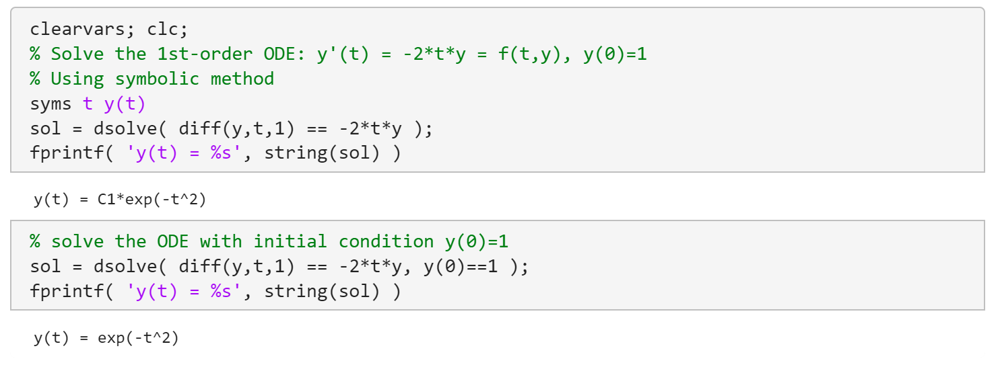
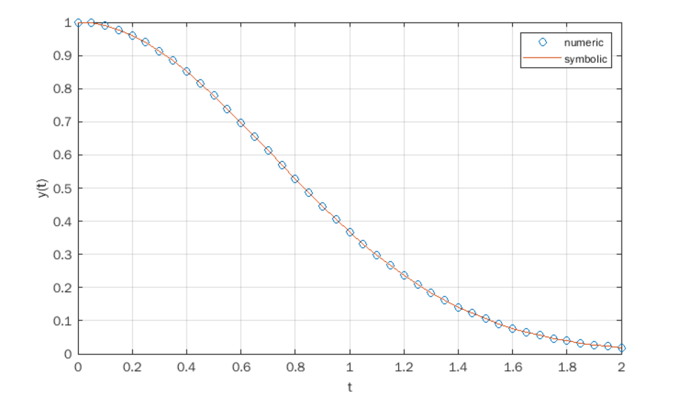
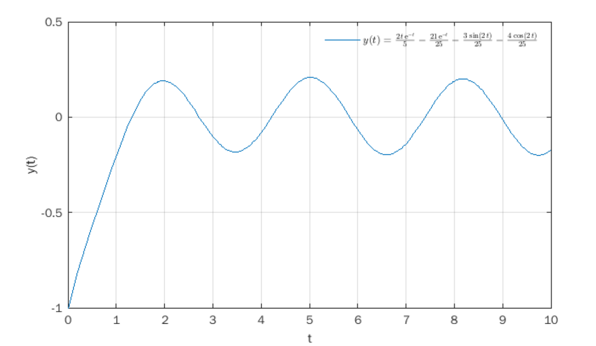
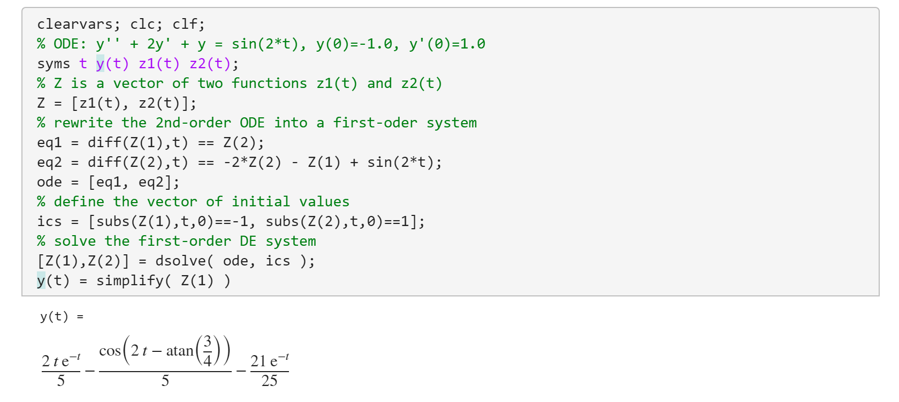
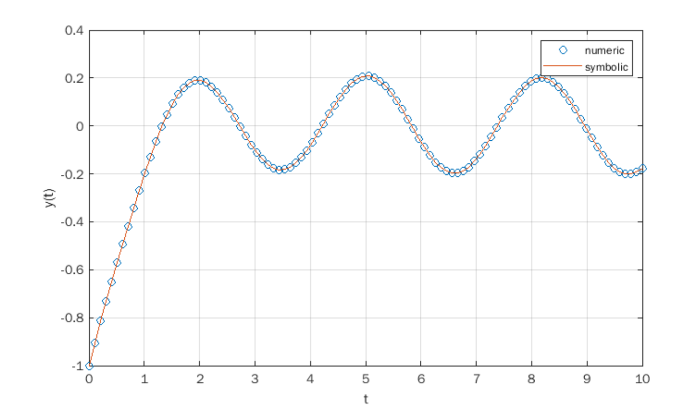
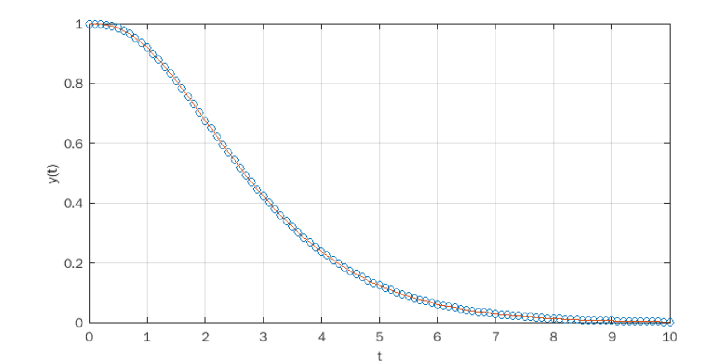

การหาผลเฉลยของสมการเชิงอนุพันธ์สามัญด้วย MATLAB#
บทความนี้กล่าวถึง การเขียนโค้ด MATLAB เพื่อหาผลเฉลยของสมการเชิงอนุพันธ์สามัญ
Keywords: MATLAB, Ordinary Differential Equations, ODE Solving, Symbolic Methods, Numerical Methods
▷ สมการเชิงอนุพันธ์สามัญ#
สมการเชิงอนุพันธ์ (Differential Equations: DE) เป็นสมการที่ประกอบไปด้วยฟังก์ชัน เช่น ซึ่งเป็นตัวแปรตาม (Dependent Variable) ที่ขึ้นอยู่กับ ซึ่งเป็นตัวแปรอิสระ หรือ ตัวแปรต้น (Independent Variable) รวมถึงอนุพันธ์อันดับต่าง ๆ ของฟังก์ชัน เช่น , , และอันดับของสมการเชิงอนุพันธ์คือ อันดับสูงสุดของอนุพันธ์ของฟังก์ชันที่มีอยู่ในสมการ
หากฟังก์ชันขึ้นอยู่กับตัวแปรอิสระเพียงตัวเดียว สมการเชิงอนุพันธ์นี้จะเรียกว่า สมการเชิงอนุพันธ์สามัญ (Ordinary Differential Equation: ODE) แต่ถ้ามีตัวแปรต้นหลายตัวและมีการใช้อนุพันธ์เทียบกับตัวแปรเหล่านั้นหลายตัวจะเรียกว่า สมการเชิงอนุพันธ์ย่อย (Partial Differential Equation: PDE)
ในทางวิศวกรรมศาสตร์ เช่น การศึกษาและวิเคราะห์วงจรไฟฟ้าแบบเชิงเส้น (Linear Circuit Analysis) ก็เกี่ยวข้องกับสมการเชิงอนุพันธ์ซึ่งมีตัวแปรต้นเป็นเวลา และการหาผลเฉลยหรือรูปแบบของฟังก์ชันที่ทำให้สมการเชิงอนุพันธ์เป็นจริงนั้น ทำได้หลายวิธีในทางคณิตศาสตร์ เช่น การใช้วิธีการแปลงลาปลาส (Laplace Transforms) สำหรับสมการเชิงอนุพันธ์สามัญเชิงเส้นที่มีสัมประสิทธิ์คงตัว เป็นต้น
แต่ในบทความนี้จะกล่าวถึง การใช้ซอฟต์แวร์และคำสั่งต่าง ๆ ของ MATLAB (ลองใช้เวอร์ชัน R2022a) ของบริษัท MathWorks เป็นตัวอย่าง โดยจำแนกเป็นสองแนวทาง คือ
- การประมวลผลเชิงสัญลักษณ์ (Symbolic Methods) โดยใช้ Symbolic Math Toolbox
- การประมวลผลเชิงตัวเลข (Numerical Methods) เช่น การใช้คำสั่ง
ode45()ซึ่งเป็นการคำนวณด้วยวิธีการที่เรียกว่า Runge-Kutta (4-th order)
▷ ตัวอย่างที่ 1#
ตัวอย่างแรกเป็นโจทย์สมการเชิงอนุพันธ์อันดับที่หนึ่ง
หากคำนวณด้วยวิธีทางคณิตศาสตร์ ก็มีวิธีการดังนี้ โดยใช้เทคนิคที่เรียกว่า วิธีแยกตัวแปร (Separation of Variables) แล้วอินทิเกรตทั้งสองตัวแปรที่เกี่ยวข้อง
โดยที่ และ เป็นค่าคงที่ใด ๆ และไม่เป็นศูนย์ และค่าของ จะหาได้ ถ้ามีการกำหนดเงื่อนไขค่าเริ่มต้น (Initial Condition) เช่น ให้ ดังนั้น
ตัวอย่างการเขียนโค้ด MATLAB เพื่อหาผลเฉลย ของ ODE
โดยวิธีการประมวลผลเชิงสัญลักษณ์ทางคณิตศาสตร์ และการใช้คำสั่ง เช่น
diff() เพื่อหาอนุพันธ์ของฟังก์ชัน
และคำสั่ง dsolve() เพื่อหาผลเฉลย มีดังนี้
clearvars; clc;
% Solve the ODE: y'(t) = -2*t*y = f(t,y), y(0)=1
% using symbolic method
syms t y(t)
% solve the ODE without initial condition
sol = dsolve( diff(y,t,1) == -2*t*y );
fprintf( 'y(t) = %s', string(sol) )
% => y(t) = C1*exp(-t^2)
% solve the ODE with initial condition y(0)=1
sol = dsolve( diff(y,t,1) == -2*t*y, y(0)==1 );
fprintf( 'y(t) = %s', string(sol) )
% => y(t) = exp(-t^2)

รูป: ผลการรันโค้ด MATLAB
ในเชิงเปรียบเทียบ การเขียนโค้ด MATLAB โดยวิธีการประมวลผลเชิงตัวเลข จะต้องมีการกำหนดช่วงสำหรับตัวแปร เช่น กำหนดให้ ( และ ) เป็นต้น และจะต้องกำหนดค่าตัวเลขสำหรับเงื่อนไขเริ่มต้นด้วย
clearvars; clc;
% Solve the OD: y'(t) = -2*t*y = f(t,y), y(0)=1
% using numeric method
t0 = 0.0; % start time point
tf = 2.0; % final time point
y0 = 1.0; % initial condition for y(0)
% define the function f(t,y)
f = @(t,y) -2*t*y;
% solve the ODE using ode45()
[ts, ys] = ode45( f, [t0 tf], y0 );
% plot both solutions (numeric and analytic)
plot( ts, ys, 'o', ts, exp( -ts.^2 ), '-' ),
grid on, xlabel('t'), ylabel('y(t)'),legend('numeric', 'symbolic')
การใช้คำสั่ง ode45() จะต้องมีอาร์กิวเมนต์ เช่น
ฟังก์ชัน f สำหรับการคำนวณค่าของ การกำหนดช่วงเวลาในการคำนวณสำหรับตัวแปร t
และจะต้องกำหนดค่าเริ่มต้น y0 สำหรับ ตามลำดับ
ผลจากการใช้คำสั่ง ode45() จะได้ชุดข้อมูลตัวเลขซึ่งเป็นอาร์เรย์สำหรับเวลา (time steps) และค่าของฟังก์ชันที่จุดเวลาต่าง ๆ
อ้างอิงโดยตัวแปร ts และ ys ตามลำดับ ดังนั้นหากต้องการตรวจสอบดูค่าของฟังก์ชันในเชิงเวลา ก็นำไปแสดงรูปกราฟ

รูป: แสดงรูปกราฟเปรียบระหว่างผลเฉลยที่ได้จากสองวิธีการ
▷ ตัวอย่างที่ 2#
ตัวอย่างที่สองเป็นสมการเชิงอนุพันธ์อันดับที่สองที่มีการกำหนดค่าเริ่มต้นสองเงื่อนไข
หากใช้วิธีการในทางคณิตศาสตร์สำหรับสมการเชิงอนุพันธ์สามัญเชิงเส้นที่มีสัมประสิทธิ์คงตัว ให้เริ่มต้นด้วยการกำหนดให้ทางขวาของสมการเป็นศูนย์ ซึ่งจะได้สมการที่เป็นเอกพันธ์ (Homogeneous) และหาผลเฉลยของสมการ จากนั้นจึงพิจารณาสมการที่ไม่เป็นเอกพันธ์ (Homogeneous) เพื่อหาผลเฉลยเฉพาะ ตามลำดับ
จากสมการที่เป็นเอกพันธ์ สามารถเขียนสมการลักษณะเฉพาะ (Characteristic Equation) ที่เกี่ยวข้อง ซึ่งเป็นพหุนามโดยใช้ตัวแปร ได้ดังนี้
โดยปรกติแล้ว ถ้าหาราก (roots) ของสมการลักษณะเฉพาะได้เป็น และไม่เป็นค่าที่ซ้ำกัน ก็สามารถเขียนรูปแบบของฟังก์ชันที่เป็นผลเฉลยได้ดังนี้
แต่เนื่องจากในตัวอย่างนี้ ได้รากของสมการที่ซ้ำกัน
ดังนั้นจะต้องเขียนรูปแบบของฟังก์ชัน ที่เป็นผลเฉลยดังนี้
ถัดไปเป็นการพิจารณาสมการที่ไม่เป็นเอกพันธ์ และทางขวามือของสมการเป็นฟังก์ชัน ดังนั้นรูปแบบของฟังก์ชันสำหรับผลเฉลยเฉพาะ เป็นดังนี้
โดยที่ และ เป็นค่าคงที่ใด ๆ ดังนั้นจะต้องหาค่า และ ที่ทำให้สมการเชิงอนุพันธ์เป็นจริง หากใช้ เป็นผลเฉลยในสมการดังกล่าว
จากนั้นให้นำฟังก์ชัน และอนุพันธ์ของฟังก์ชัน และ ไปแทนลงในสมการเชิงอนุพันธ์ แล้วจัดกลุ่มแยกตามพจน์สำหรับ กับ ดังนี้
เมื่อแก้ระบบสมการสองตัวแปรจะได้ และ
ผลเฉลยทั่วไปที่ได้ เป็นผลรวมของ และ ในรูปแบบของฟังก์ชันต่อไปนี้
จากเงื่อนไขค่าเริ่มต้น และ จะได้ระบบสมการที่สามารถนำไปหาค่า ของ และ ได้
โดยสรุป จะได้ฟังก์ชัน ที่เป็นผลเฉลยของปัญหาค่าเริ่มต้นดังนี้
จะเห็นได้ว่า การหาผลเฉลยของสมการเชิงอนุพันธ์ในตัวอย่างนี้มีหลายขั้นตอน
ถัดไปลองมาดูตัวอย่างเขียนโค้ด MATLAB ด้วยวิธีการคำนวณเชิงสัญลักษณ์เพื่อใช้ในการหาคำตอบ
clearvars; clc; clf;
% 2nd-order ODE: y'' + 2y' + y = sin(2t)
% Initial conditions: y(0)=-1, y'(0)=1
syms t y(t)
% the first derivative of y(t)
D1y = diff(y,t,1);
% the first derivative of y(t)
D2y = diff(y,t,2);
% write the dififerential equation
ode = D2y + 2*D1y + y == sin(2*t);
% define the vector of initial values
ics = [y(0)==-1, D1y(0)==1];
% solve the ODE without initial values to find y(t)
y(t) = simplify( expand( dsolve(ode) ) );
% rewrite the solution y(t)
y(t) = collect( y(t), [exp(-t)])
D1y = collect( diff( y,t ), exp(-t))
% solve the linear equation system to find C1 and C2
solve( [y(0)==-1, D1y(0)==1] )
% solve the ODE with initial values and simplify the solution
y(t) = simplify( dsolve(ode, ics), 'Steps', 100 )
% convert symbolic expression to Latex string
tex_str = latex(y(t));
% plot the solution y(t) for t in [t0 tf]
t0=0.0; tf=10.0;
fplot( y(t), [t0 tf] ), grid on,
xlabel('t'), ylabel('y(t)'), ylim([-1 0.5]),
legend( ['$y(t)=' tex_str '$'],'Interpreter','latex' ),
legend( 'boxoff')

รูป: แสดงรูปกราฟสำหรับ ที่ได้จากการคำนวณเชิงสัญลักษณ์ด้วย MATLAB
การหาผลเฉลยสำหรับสมการเชิงอนุพันธ์ที่มีอันดับมากกว่าหนึ่ง มีอีกวิธีหนึ่งคือ การแปลงสมการดังกล่าวให้เป็นระบบสมการอนุพันธ์ที่มีอันดับเป็นหนึ่ง ซึ่งมีแนวทางดังนี้
ขั้นตอนแรกคือ กำหนดฟังก์ชันเป็นตัวช่วย เช่น และ สำหรับสมการอนุพันธ์อันดับสอง
จากนั้นเขียนสมการอนุพันธ์ให้อยู่ในรูปเมทริกซ์
ตัวอย่างการเขียนโค้ด MATLAB โดยใช้การคำนวณเชิงสัญลักษณ์มีดังนี้
clearvars; clc; clf;
% ODE: y'' + 2y' + y = sin(2*t), y(0)=-1.0, y'(0)=1.0
syms t y(t) z1(t) z2(t);
% Z is a vector of two functions z1(t) and z2(t)
Z = [z1(t), z2(t)];
% rewrite the 2nd-order ODE into a first-oder system
eq1 = diff(Z(1),t) == Z(2);
eq2 = diff(Z(2),t) == -2*Z(2) - Z(1) + sin(2*t);
ode = [eq1, eq2];
% define the vector of initial values
ics = [subs(Z(1),t,0)==-1, subs(Z(2),t,0)==1];
% solve the first-order DE system
[Z(1),Z(2)] = dsolve( ode, ics );
y(t) = simplify( Z(1) )
% plot the solution y(t)
t0=0.0; tf=10.0;
t_interval = [t0 tf];
fplot( y(t), t_interval ),
grid on, xlabel('t'), ylabel('y(t)')

รูป: ผลลัพธ์จากการรันโค้ด MATLAB (บางส่วน)
ลองมาดูตัวอย่างการคำนวณด้วยวิธีเชิงตัวเลข โดยใช้คำสั่ง ode45() เปรียบเทียบกับวิธีเชิงสัญลักษณ์
clearvars; clc; clf;
% ODE: y'' + 2y' + y = sin(2t), y(0)=-1, y'(0)=1
% define the function of the 1st-order DE system
f = @(t,Z) [Z(2); -2*Z(2) - Z(1) + sin(2*t)];
% set the interval
t0=0.0; tf=10.0; t_interval = [t0 tf];
% set the vector of initial values
Z_init = [-1.0 1.0];
% solve the DE system numerically by calling ode45()
sol = ode45( f, t_interval, Z_init );
% create a vector of 100 time steps in [t0,tf]
ts = linspace( t0, tf, 100 );
% call deval() to evaluate the values of y(t) = Z(1)
y_numeric = deval( sol, ts, 1 );
% evaluate the values of y(t) provided by the symbolic method
y_symbolic = (10*ts - 21).*exp(-ts)/25 - cos(2*ts-atan(3/4))/5;
plot( ts, y_numeric, 'o', ts, y_numeric, '-' ),
grid on, xlabel('t'), ylabel('y(t)'), legend('numeric','symbolic')

รูป: แสดงรูปกราฟของฟังก์ชันที่เป็นผลเฉลยซึ่งได้จากสองวิธีและเปรียบเทียบกัน
MATLAB มีคำสั่ง เช่น odeToVectorField() สำหรับแปลงสมการเชิงอนุพันธ์ที่มีอันดับมากกว่าหนึ่ง
ให้เป็นสมการเชิงอนุพันธ์อันดับหนึ่งในรูปเมทริกซ์หรือเวกเตอร์ และคำสั่ง matlabFunction() สำหรับ
แปลงผลลัพธ์ที่ได้ให้เป็นฟังก์ชันสำหรับนำไปใช้ได้กับคำสั่ง ode45() ดังนี้
clearvars; clc; clf;
% ODE: y'' + 2y' + y = sin(2*t), y(0)=-1, y'(0)=1
% Use symbolic method to determine the function for ode45()
syms t y(t)
eqn = diff(y,t,2) == -2*diff(y,t) - y + sin(2*t);
% convert a higher-order ODE to a system of 1st-order DEs
% Y is a two-element vector with Y(1)=y(t) and Y(2)=y'(t)
% V = [ Y(2); -2Y(2) - Y(1) + sin(2t)]
[V,Y] = odeToVectorField(eqn);
% convert symbolic expression to a function handle
f = matlabFunction( V, 'vars', {'t','Y'} );
% set time interval
t0=0.0; tf=10.0; t_interval = [t0 tf];
% set the vector of initial values
Y_init = [-1.0 1.0];
% solve the ODE numerically with ode45()
sol = ode45( f, t_interval, Y_init );
% define an array of 100 time steps
ts = linspace(t0,tf,100);
% evaluate the solution of the DE problem
y_numeric = deval( sol, ts, 1 );
plot( ts, y_numeric ),
grid on, xlabel('t'), ylabel('y(t)')
▷ ตัวอย่างที่ 3#
ตัวอย่างถัดไปเป็นสมการเชิงอนุพันธ์อันดับ 4 พร้อมเงื่อนไขค่าเริ่มต้น
หากพิจารณาสมการที่เป็นเอกพันธ์ จะเขียนสมการลักษณะเฉพาะได้ดังนี้
อาจลองเขียนโค้ดและใช้คำสั่งของ MATLAB ในการแก้สมการเพื่อหารากของสมการได้ดังนี้
syms s
roots = solve( s^4 + 2*s^3 + 2*s^2 + 2*s + 1 == 0, s )';
disp(roots)
รากของสมการซึ่งมีดีกรีของพหุนามเท่ากับ 4 หาได้ดังนี้
ซึ่งจะเห็นได้ว่า มีค่าเป็นจำนวนจริงแต่ซ้ำกัน (repeated roots) และ เป็นจำนวนเชิงซ้อน (เป็นสังยุคของจำนวนเชิงซ้อนคู่กัน)
ดังนั้นรูปแบบของฟังก์ชันที่เป็นผลเฉลยของสมการเชิงอนุพันธ์ที่เป็นเอกพันธ์ เขียนได้ดังนี้
โดยที่ เป็นค่าคงที่ใด ๆ
ผลเฉลยเจาะจงสำหรับสมการเชิงอนุพันธ์ที่ไม่เป็นเอกพันธ์ ก็มีรูปแบบดังนี้
ดังนั้นเมื่อได้ผลเฉลยทั้งสองกรณีแล้ว ก็นำมาหาผลรวม
หากพิจารณาเงื่อนไขสำหรับค่าเริ่มต้น จะได้ผลเฉลยตามรูปแบบของฟังก์ชันดังนี้
ตัวอย่างการเขียนโค้ด MATLAB เพื่อหาผลเฉลยมีดังนี้
clearvars; clc;
syms t y(t);
% find the derivatives of y(t) up to order 4
D1y = diff(y,t,1);
D2y = diff(y,t,2);
D3y = diff(y,t,3);
D4y = diff(y,t,4);
ode = D4y + 2*D3y + 2*D2y + 2*D1y + y == 10*exp(-2*t);
% solve the ODE and display the solution
sol = simplify( dsolve(ode), 'Steps', 100 );
disp( sol );
% solve the ODE with initial values and
% convert symbolic function to numeric function
ics = [y(0)==0; D1y(0)==1; D2y(0)==-1; D3y(0)==2];
sol = simplify(dsolve(ode, ics))
f = matlabFunction( sol );
% solve the system of 1st-order DEs
[V,Y] = odeToVectorField( ode );
F = matlabFunction( V, 'vars', {'t','Y'} );
t0 = 0.0; tf = 20.0;
t_interval = [t0 tf];
ts = linspace( t0, tf, 50 );
Y_init = double( rhs(ics)' );
sol = ode45( F, t_interval, Y_init );
y_symbolic = f( ts );
y_numeric = deval( sol, ts, 1 );
% plot both data sets
plot( ts, y_numeric, 'o', ts, y_symbolic, '-' ),
grid on, xlabel('t'), ylabel('y(t)')
▷ ตัวอย่างที่ 4#
ถัดไปเป็นการหาผลเฉลยของสมการเชิงอนุพันธ์ แต่จะลองเขียนโค้ด MATLAB
โดยใช้วิธีการที่เรียกว่า Runge-Kutta (4th-order)
โดยไม่ใช้คำสั่ง ode45()
สมการเชิงอนุพันธ์อันดับสองต่อไปนี้ มีฟังก์ชัน ที่เป็นผลเฉลยดังนี้
การคำนวณด้วยวิธีการของ Runge-Kutta (4th-order) #
วิธีการของ Runge-Kutta (4th-order) หรือ RK4 จะใช้สำหรับการผลเฉลยเชิงตัวเลขของสมการเชิงอนุพันธ์อันดับหนึ่ง และมีการกำหนดค่าเริ่มต้นตามรูปแบบต่อไปนี้
และการคำนวณจะเริ่มจากค่าเริ่มต้น เพื่อคำนวณค่าของ ในตำแหน่งถัดไปคือ สำหรับ ตามลำดับ และให้มีระยะห่างคงที่เท่ากับ (เรียกว่า step-size) หรือ
สูตรในการคำนวณสำหรับ RK4 สำหรับ มีดังนี้
ดังนั้นถ้าจะคำนวณค่า ในแต่ละรอบ จะต้องทราบค่าของ และ
ถ้าจะนำไปใช้กับสมการเชิงอนุพันธ์อันดับสูงกว่าหนึ่ง จะต้องมีการแปลงให้เป็นระบบของสมการเชิงอนุพันธ์อันดับหนึ่ง และเขียนสูตรการคำนวณ RK4 ได้ดังนี้
โดยที่ และ เป็นเวกเตอร์ เช่นเดียวกับ ที่ให้ค่าเป็นเวกเตอร์
ดังนั้นถ้าจะเขียนโค้ด MATLAB สำหรับตัวอย่างที่ 4 โดยใช้ RK4 ก็ทำได้ดังนี้
clearvars; clc; clf;
% set step size
h = 0.1;
% define time interval
t0 = 0; tf = 10.0;
% define timesteps
ts = t0:h:tf;
% Y is a vector with two elements
Y = zeros( 2, length(ts) );
% set the initial values at time t0
Y(:,1) = [1.0, 0.0];
% define F(t,Y) which returns a vector of two arrays
F = @(t,Y) [Y(2); -2*Y(2) - Y(1) + exp(-t)];
for i=1:(length(ts)-1)
K1 = F( ts(i) , Y(:,i) );
K2 = F( ts(i) + h/2 , Y(:,i) + h*K1/2 );
K3 = F( ts(i) + h/2 , Y(:,i) + h*K2/2 );
K4 = F( ts(i) + h , Y(:,i) + h*K3 );
Y(:,i+1) = Y(:,i) + h*(K1 + 2*K2 + 2*K3 + K4)/6;
end
% define the exact solution
f_exact = @(t) (1/2).*exp(-t).*(t.^2 + 2.*t + 2);
% plot both solutions
plot( ts, Y(1,:), 'o', ts , f_exact(ts), '-' ),
grid on, xlabel('t'), ylabel('y(t)')

รูป: แสดงรูปกราฟของฟังก์ชัน ที่เป็นผลเฉลยซึ่งได้จากสองวิธี
▷ กล่าวสรุป#
บทความนี้ได้นำเสนอตัวอย่างการเขียนโค้ดสำหรับ MATLAB เพื่อหาผลเฉลยของสมการเชิงอนุพันธ์สามัญ ด้วยวิธีการคำนวณเชิงสัญลักษณ์ และเปรียบเทียบกับวิธีการคำนวณเชิงตัวเลข
This work is licensed under a Creative Commons Attribution-ShareAlike 4.0 International License.
Created: 2022-04-12 | Last Updated: 2022-04-15